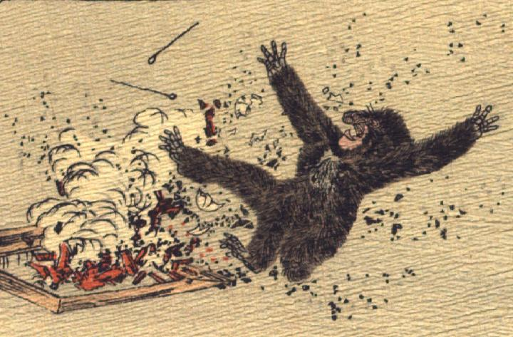

囲炉裏で破裂した卵とそれに驚く猿。囲炉裏の炭が赤く燃え上がり、灰がもうもうと立ち上り、割れた卵の殻と火箸が飛び上がっている。猿は両手両足を上げてひっくり返っている。
著作者：J.Dautremer／出典：親書誌：U426_nichibunken_0106：La bataille du singe et du crabe／日付：2006／資源識別子：U426_nichibunken_0106_0009_0000
Copyright (c)2010- International Research Center for Japanese Studies, Kyoto, Japan. All rights reserved.